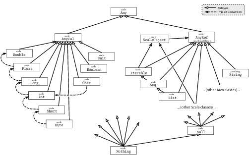

What is Idiomatic syntax?
val immutable = "i'm invulnerable"
immutable = "you can't change me" // val re-assign compiler error
var mutable = "i can be compromised"
mutable = "and there's nothing you can do about it"
Because..
Except when...
At the end of the task it should compile and there should be N less failed test, where N will be mentioned as part of each exercise
The project code expects an immutable variable named iAmAlwaysFalse
and mutable variable named iCanBeFalseOrTrue in existing object named tsns.scalafundamentals
val stringly = "i'm a string"
val verbose: String = "i'm a verbose string assignment": String
def stringCaller = "my return type is inferred"
Polymorphic type inference
val sequenceOfString = Seq("this sequence type", "is", "inferred")
val mixedBag = Seq(1, 2, "three", "banana", Math.PI)
Inferring a common ancestor
class Animal
class Dog extends Animal
class Cat extends Animal
// evaluates to a Seq[Animal]
val animals = Seq(new Dog, new Cat)
As we saw earlier, Any is the supertype of all types
`Nothing` or `Null` are bottom types, descendants of all types

I wanted myList to contain integers. How can I make sure it in the code?
Fix the test related to myList.
What was the problem? What would be a solution? What would be the typesafest solution?
Are you still with me?
def mean(nums: Seq[Int]) = nums.sum / nums.size
def mean(nums: Seq[Int]) = nums.sum / nums.size
def mean(nums: Seq[Int]) = nums.sum / nums.size
Fix the failed 'Functions'. What was the problem?
val mean = (nums: Seq[Int]) => nums.sum / nums.size
You can build very expressive Domain Specific Languages (DSL) in Scala because of the flexibility of its calling semantics
For the most part you sould continue to use the same semantics as in Java
foo(42, bar)
target.foo(42, bar)
target.foo()
but there are other cases we can consider..
val bigList = 1 to 10e6.toInt
bigList.size
val piSeq = Seq("the", "value", "of", "pi", "is", Math.PI)
piSeq mkString " "
val square = (x: Int) => Math.pow(x, 2)
Seq(1,2,3) map square
Nearly every line of Scala is an expression. Where expressions always return a value, statements do not.
Some examples of statements:
Some constructs that are traditionally statements in other languages are expressions in Scala: if/else, for/while (type Unit), throw (type Nothing)
When passing a function as the last parameter it's appropriate to use infix notation with an expression.
Seq(1,2,3,2,1).foldLeft(0) { (last: Int, num:Int) =>
if (last >= num) last
else num
}
Fix the failed 'Expressions'. What was the problem? How it can be solved in Scala?
class Batman(alterEgo: String) {
def themeSong() = "DA NA NA NA NA NA, BATMAN!"
override def toString =
s"the batman is aka as $alterEgo"
}
'Classes' section expect a variable batman that has accessible alterego
and unaccesible name properties. Add your code (hint: Class) to tsns.scalafundamentals to support it. Quiz: in how many different ways could it be implemented?
case class Superhero(name: String, sidekick: String)
object Scalator {
def apply(events: Seq[String]) = new Scalator(events)
}
class Scalator(events: Seq[String]) {
override def toString =
s"Scalator events: ${events.mkString(", ")}"
}
Scalator(Seq("Why scala?", "Scala Fundamentals", "Collections"))
'Case Classes' section expect a variable superman that has accessible sequel
property. Add your code (hint: case class) to tsns.scalafundamentals to support it.
One more test in this section expects to be able to create a superman with actorName parameter. Quiz: in how many different instances of the class could be out there?